💡 На этом проекте ты:
- соберёшь карту леса (Terrain + деревья) 🌳
- сделаешь лагерь:
TentиCampfire(Union + Fire + свет) 🔥 - создашь шаблон еды и
FoodManager(ModuleScript) 🍎 - свяжешь сервер и GUI: шкалы, уведомления, эффект сна 💤
| Этап | Время | Что делаем |
|---|---|---|
| Теория систем | 12 мин | 3 шкалы, кто за что отвечает |
| Мини-игра | 8 мин | Пробное выживание на сайте |
| Карта + лагерь | 25 мин | Лес, Tent, Campfire |
| Еда + RemoteEvent | 15 мин | Apple, FoodScript, события |
| Серверные скрипты | 25 мин | FoodManager, Survival, Main |
| Клиент GUI | 15 мин | Stats / Notify / Sleep |
| Тест + доп. | 10 мин+ | Play и доработки |
| Итого | ~110 мин | лучше на 2 занятия |
Нужно заранее: моделирование, события, ClickDetector, RemoteEvent, основы GUI. После кликера (П1) идти сюда проще — знакомы клиент/сервер.
0 Теория: три шкалы выживания
📊 Что держит игрока в живых
Голод (Hunger)
Падает сам. Поднимается яблоками (+25).
Тепло (Warmth)
Падает на холоде. Растёт у костра (< 15 studs).
Отдых (Stamina)
Падает сам. Полный отдых — клик по Tent.
Если любая шкала = 0 → Humanoid теряет здоровье. Это и есть «выживание».
🧩 Кто что делает
| Объект / скрипт | Роль |
|---|---|
SurvivalManager | Создаёт SurvivalStats, уменьшает шкалы, сон, тепло |
FoodManager (Module) | Спавн / респавн яблок по точкам карты |
Main | Один раз вызывает FoodManager.Initialize() |
FoodScript | Клик по яблоку → +голод → респавн |
StatsDisplay | Рисует три полоски |
NotificationHandler | Всплывающие сообщения |
SleepEffect | Затемнение экрана при сне |
📦 Целевая структура
ReplicatedStorage
Apple (шаблон) · FoodScript
NotificationEvent · SleepEvent
ServerScriptService
FoodManager (ModuleScript) · SurvivalManager · Main
StarterGui
SleepEffect · NotificationHandler · StatsDisplay
🧠 Квиз: где хранить шаблон яблока для клонирования?
🧠 Квиз: FoodManager — это какой тип скрипта?
🧠 Квиз: клик по палатке должен…
Apple в RSrequire(FoodManager)🕹️ Мини-игра «Ночь в лесу»
Шкалы падают сами. Ешь, грейся, спи — как в настоящей игре.
🛠️ Проект в Studio: «Выживание в лесу»
Иди по фазам. Имена объектов — как в коде, иначе скрипты не найдут лагерь и еду.
🌲 Фаза 1 — Карта леса 15 мин
- Открой Home → Editor (Terrain) или вкладку Terrain.
- Нарисуй траву / холмы. Можно добавить небольшой водоём.
- Расставь деревья (Toolbox → Trees или свои модели). Anchored = true.
- Поставь SpawnLocation в будущий лагерь.
🛏️ Фаза 2 — Палатка (Tent) 6 мин
- Создай Part небольшого размера (как спальный мешок / подстилка).
- Переименуй в
Tent, Anchored = true, цвет на вкус. - Добавь внутрь ClickDetector.
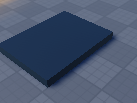
Спальное место — плоский Part в лагере.
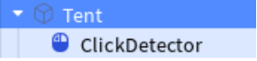
Explorer: Tent → ClickDetector.
🔥 Фаза 3 — Костёр (Campfire) 12 мин
- Собери конструкцию из Parts, похожую на костёр (основание + «брёвна»).
- Выдели все части костра.
- Вкладка Model → Union — объедини в один объект.
- Переименуй в
Campfire. - Нажми «+» на Campfire → добавь Fire и PointLight.
- Настрой PointLight (примерно): Brightness ≈ 14, Color тёплый оранжевый, Range ≈ 18.
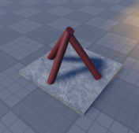
Сначала собираем из отдельных Parts.
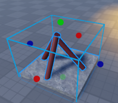
Выделяем все части перед Union.
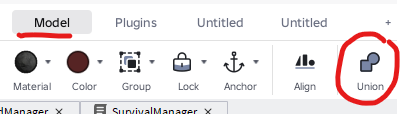
Model → Union (обвести кнопку на панели).
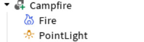
Campfire → Fire + PointLight.
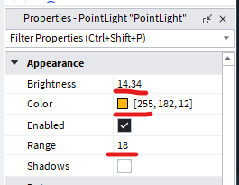
PointLight: яркость, цвет, радиус.
🍎 Фаза 4 — Шаблон еды Apple 8 мин
- Создай небольшой круглый Part (Shape = Ball), красный / ягодный цвет.
- Имя:
Apple, Anchored = true. - Добавь ClickDetector.
- Не оставляй рабочий Script внутри шаблона — логика будет в
FoodScript(следующая фаза). - Перетащи
Appleв ReplicatedStorage.
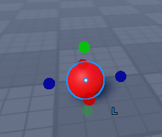
Яблоко — маленький Ball Part.
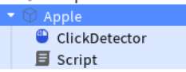
В шаблоне достаточно ClickDetector (скрипт клонирует FoodManager).
📡 Фаза 5 — ReplicatedStorage: FoodScript + события 10 мин
- В ReplicatedStorage создай Script с именем
FoodScript(это шаблон — сам не запускается, пока его не клонируют на яблоко). - Вставь код FoodScript ниже.
- Создай два RemoteEvent:
NotificationEventSleepEvent
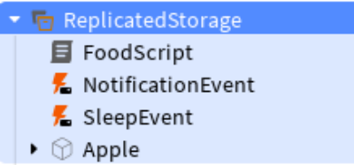
Должно быть: FoodScript, NotificationEvent, SleepEvent, Apple.
📄 Код FoodScript (ReplicatedStorage)
local foodPart = script.Parent
local clickDetector = foodPart:FindFirstChildOfClass("ClickDetector")
if not clickDetector then
clickDetector = Instance.new("ClickDetector")
clickDetector.Parent = foodPart
end
local HUNGER_RESTORE = 25
local PICKUP_DISTANCE = 15
local ReplicatedStorage = game:GetService("ReplicatedStorage")
local notificationEvent = ReplicatedStorage:WaitForChild("NotificationEvent")
local ServerScriptService = game:GetService("ServerScriptService")
local FoodManager = require(ServerScriptService:WaitForChild("FoodManager"))
clickDetector.MouseClick:Connect(function(player)
local char = player.Character
if not char then return end
local rootPart = char:FindFirstChild("HumanoidRootPart")
if not rootPart then return end
if (rootPart.Position - foodPart.Position).Magnitude > PICKUP_DISTANCE then return end
local stats = player:FindFirstChild("SurvivalStats")
if stats then
local hunger = stats:FindFirstChild("Hunger")
if hunger then
hunger.Value = math.min(100, hunger.Value + HUNGER_RESTORE)
notificationEvent:FireClient(player, "Вы съели еду. +".. HUNGER_RESTORE .. "% голода")
FoodManager.OnFoodEaten(foodPart.Position)
foodPart:Destroy()
end
end
end)
🖥️ Фаза 6 — ServerScriptService 20 мин
- Создай ModuleScript →
FoodManager. - Создай Script →
SurvivalManager. - Создай Script →
Main(только запуск еды).
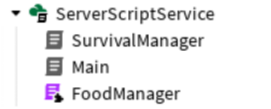
SurvivalManager, Main, FoodManager (фиолетовая иконка модуля).
FoodManager.Initialize() вызываем один раз из Main.
В SurvivalManager — только шкалы, костёр и палатка (без повторного Initialize).
📄 FoodManager (ModuleScript) — полный код
local RESPAWN_MIN_TIME = 20
local RESPAWN_MAX_TIME = 40
local MAX_FOOD_ON_MAP = 5
local FOOD_MODEL = "Apple"
local FOOD_SCRIPT_NAME = "FoodScript"
-- Подправь координаты под свою карту
local SPAWN_POINTS = {
Vector3.new(50, 100, 50),
Vector3.new(-30, 100, 20),
Vector3.new(10, 100, -40),
Vector3.new(-50, 100, -30),
Vector3.new(60, 100, -20),
Vector3.new(-20, 100, 60),
Vector3.new(80, 100, 10),
Vector3.new(-60, 100, -50),
}
local ReplicatedStorage = game:GetService("ReplicatedStorage")
local Workspace = game:GetService("Workspace")
local function getTerrainHeight(x, z)
local rayOrigin = Vector3.new(x, 300, z)
local rayDirection = Vector3.new(0, -1, 0) * 500
local raycastParams = RaycastParams.new()
local result = Workspace:Raycast(rayOrigin, rayDirection, raycastParams)
if result then
return result.Position.Y + 1
end
return 5
end
local function spawnFood()
local template = ReplicatedStorage:FindFirstChild(FOOD_MODEL)
local foodScriptTemplate = ReplicatedStorage:FindFirstChild(FOOD_SCRIPT_NAME)
if not template or not foodScriptTemplate then
warn("Не найден шаблон еды или скрипт еды в ReplicatedStorage!")
return
end
local point = SPAWN_POINTS[math.random(1, #SPAWN_POINTS)]
local height = getTerrainHeight(point.X, point.Z)
local position = Vector3.new(point.X, height, point.Z)
local newFood = template:Clone()
newFood.Position = position
newFood.Parent = Workspace
local clickDetector = newFood:FindFirstChildOfClass("ClickDetector") or Instance.new("ClickDetector")
clickDetector.Parent = newFood
foodScriptTemplate:Clone().Parent = newFood
print("Еда заспавнена в", position)
return newFood
end
function FoodManager.Initialize()
for _, obj in ipairs(Workspace:GetChildren()) do
if obj.Name == FOOD_MODEL then obj:Destroy() end
end
for i = 1, MAX_FOOD_ON_MAP do
spawnFood()
end
end
function FoodManager.OnFoodEaten(foodPosition)
local delayTime = math.random(RESPAWN_MIN_TIME, RESPAWN_MAX_TIME)
task.delay(delayTime, function()
local currentFoodCount = 0
for _, obj in ipairs(Workspace:GetChildren()) do
if obj.Name == FOOD_MODEL then currentFoodCount += 1 end
end
if currentFoodCount < MAX_FOOD_ON_MAP then
spawnFood()
end
end)
end
return FoodManager
📄 SurvivalManager (Script) — полный код
local ReplicatedStorage = game:GetService("ReplicatedStorage")
local HUNGER_DECREASE_RATE = 0.2
local COLD_DECREASE_RATE = 0.15
local STAMINA_DECREASE_RATE = 0.1
local MAX_STAT = 100
local notificationEvent = ReplicatedStorage:WaitForChild("NotificationEvent")
local sleepEvent = ReplicatedStorage:WaitForChild("SleepEvent")
local campfire = workspace:FindFirstChild("Campfire")
local tent = workspace:FindFirstChild("Tent")
if campfire then
print("Campfire найден")
else
warn("Campfire не найден! Тепло не будет работать.")
end
if tent then
print("Tent найден")
local click = tent:FindFirstChildWhichIsA("ClickDetector")
if not click then
click = Instance.new("ClickDetector")
click.Parent = tent
end
click.MouseClick:Connect(function(player)
local stats = player:FindFirstChild("SurvivalStats")
if not stats then return end
local char = player.Character
if char and char:FindFirstChild("HumanoidRootPart") then
local dist = (char.HumanoidRootPart.Position - tent:GetPivot().Position).Magnitude
if dist < 12 then
stats.Stamina.Value = MAX_STAT
notificationEvent:FireClient(player, "Вы поспали. Отдых восстановлен.")
sleepEvent:FireClient(player)
end
end
end)
else
warn("Tent не найден! Сон не будет работать.")
end
local function isNearHeatSource(character)
if not campfire then return false end
local root = character and character:FindFirstChild("HumanoidRootPart")
if not root then return false end
for _, part in ipairs(campfire:GetDescendants()) do
if part:IsA("BasePart") then
if (root.Position - part.Position).Magnitude < 15 then
return true
end
end
end
return false
end
Players.PlayerAdded:Connect(function(player)
local stats = Instance.new("Folder")
stats.Name = "SurvivalStats"
stats.Parent = player
local hunger = Instance.new("NumberValue")
hunger.Name = "Hunger"
hunger.Value = MAX_STAT
hunger.Parent = stats
local warmth = Instance.new("NumberValue")
warmth.Name = "Warmth"
warmth.Value = MAX_STAT
warmth.Parent = stats
local stamina = Instance.new("NumberValue")
stamina.Name = "Stamina"
stamina.Value = MAX_STAT
stamina.Parent = stats
local nearFireFlag = false
task.spawn(function()
local lastUpdate = tick()
while player.Parent do
local dt = tick() - lastUpdate
lastUpdate = tick()
local char = player.Character
stats.Hunger.Value = math.max(0, stats.Hunger.Value - HUNGER_DECREASE_RATE * dt)
local isNear = char and isNearHeatSource(char)
if isNear then
stats.Warmth.Value = math.min(MAX_STAT, stats.Warmth.Value + 0.5 * dt)
if not nearFireFlag then
nearFireFlag = true
notificationEvent:FireClient(player, "Вы греетесь у костра.")
end
else
stats.Warmth.Value = math.max(0, stats.Warmth.Value - COLD_DECREASE_RATE * dt)
if nearFireFlag then nearFireFlag = false end
end
stats.Stamina.Value = math.max(0, stats.Stamina.Value - STAMINA_DECREASE_RATE * dt)
if (stats.Hunger.Value <= 0 or stats.Warmth.Value <= 0 or stats.Stamina.Value <= 0) and char then
local humanoid = char:FindFirstChild("Humanoid")
if humanoid and humanoid.Health > 0 then
humanoid.Health = humanoid.Health - 2 * dt
end
end
task.wait(0.1)
end
end)
end)
📄 Main (Script) — короткий
local FoodManager = require(ServerScriptService:WaitForChild("FoodManager"))
FoodManager.Initialize()
📱 Фаза 7 — StarterGui: три LocalScript 15 мин
- В StarterGui создай три LocalScript:
SleepEffect,NotificationHandler,StatsDisplay. - Вставь коды ниже (GUI создаётся из скрипта — ScreenGui вручную не нужен).
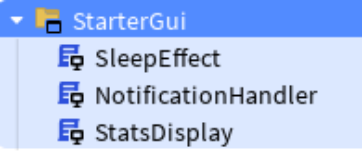
SleepEffect, NotificationHandler, StatsDisplay.
📄 SleepEffect
local player = Players.LocalPlayer
local playerGui = player:WaitForChild("PlayerGui")
local ReplicatedStorage = game:GetService("ReplicatedStorage")
local sleepEvent = ReplicatedStorage:WaitForChild("SleepEvent", 10)
if not sleepEvent then
warn("SleepEvent not found!")
return
end
local screenGui = Instance.new("ScreenGui")
screenGui.Name = "SleepGUI"
screenGui.Parent = playerGui
local overlay = Instance.new("Frame")
overlay.Name = "SleepOverlay"
overlay.Size = UDim2.new(1, 0, 1, 0)
overlay.BackgroundColor3 = Color3.new(0, 0, 0)
overlay.BackgroundTransparency = 1
overlay.Visible = false
overlay.Parent = screenGui
sleepEvent.OnClientEvent:Connect(function()
overlay.Visible = true
for t = 1, 0, -0.05 do
overlay.BackgroundTransparency = t
task.wait(0.025)
end
overlay.BackgroundTransparency = 0
task.wait(3)
for t = 0, 1, 0.05 do
overlay.BackgroundTransparency = t
task.wait(0.025)
end
overlay.BackgroundTransparency = 1
overlay.Visible = false
end)
📄 NotificationHandler
local player = Players.LocalPlayer
local playerGui = player:WaitForChild("PlayerGui")
local ReplicatedStorage = game:GetService("ReplicatedStorage")
local notificationEvent = ReplicatedStorage:WaitForChild("NotificationEvent", 10)
if not notificationEvent then
warn("NotificationEvent not found!")
return
end
local screenGui = Instance.new("ScreenGui")
screenGui.Name = "NotificationGUI"
screenGui.Parent = playerGui
local container = Instance.new("Frame")
container.Name = "NotificationContainer"
container.AnchorPoint = Vector2.new(0.5, 1)
container.Position = UDim2.new(0.5, 0, 1, -20)
container.Size = UDim2.new(0.35, 0, 0, 0)
container.BackgroundTransparency = 1
container.AutomaticSize = Enum.AutomaticSize.Y
container.Parent = screenGui
local layout = Instance.new("UIListLayout")
layout.Parent = container
layout.HorizontalAlignment = Enum.HorizontalAlignment.Center
layout.SortOrder = Enum.SortOrder.LayoutOrder
layout.VerticalAlignment = Enum.VerticalAlignment.Bottom
layout.Padding = UDim.new(0, 5)
local function showNotification(text)
local msg = Instance.new("Frame")
msg.Size = UDim2.new(1, 0, 0, 40)
msg.BackgroundColor3 = Color3.fromRGB(0, 0, 0)
msg.BackgroundTransparency = 0.5
msg.BorderSizePixel = 0
msg.LayoutOrder = -1
msg.Parent = container
local label = Instance.new("TextLabel")
label.Size = UDim2.new(1, -10, 1, 0)
label.Position = UDim2.new(0, 5, 0, 0)
label.BackgroundTransparency = 1
label.Text = text
label.TextColor3 = Color3.new(1, 1, 1)
label.TextScaled = true
label.Font = Enum.Font.SourceSansBold
label.Parent = msg
task.delay(4, function()
for i = 10, 1, -1 do
msg.BackgroundTransparency = msg.BackgroundTransparency + 0.05
label.TextTransparency = label.TextTransparency + 0.1
task.wait(0.05)
end
msg:Destroy()
end)
end
notificationEvent.OnClientEvent:Connect(function(text)
showNotification(text)
end)
📄 StatsDisplay
local player = Players.LocalPlayer
local playerGui = player:WaitForChild("PlayerGui")
local screenGui = Instance.new("ScreenGui")
screenGui.Name = "SurvivalGUI"
screenGui.Parent = playerGui
local function createBar(name, color, posY)
local barFrame = Instance.new("Frame")
barFrame.Size = UDim2.new(0, 200, 0, 20)
barFrame.Position = UDim2.new(0, 10, 0, posY)
barFrame.BackgroundColor3 = Color3.fromRGB(50, 50, 50)
barFrame.Parent = screenGui
local fill = Instance.new("Frame")
fill.Name = "Fill"
fill.Size = UDim2.new(1, 0, 1, 0)
fill.BackgroundColor3 = color
fill.Parent = barFrame
local label = Instance.new("TextLabel")
label.Size = UDim2.new(1, 0, 1, 0)
label.BackgroundTransparency = 1
label.Text = name .. ": 100%"
label.TextColor3 = Color3.new(1, 1, 1)
label.TextScaled = true
label.Parent = barFrame
return fill, label
end
local hungerFill, hungerLabel = createBar("Голод", Color3.fromRGB(255, 170, 0), 50)
local warmthFill, warmthLabel = createBar("Тепло", Color3.fromRGB(0, 170, 255), 80)
local staminaFill, staminaLabel = createBar("Отдых", Color3.fromRGB(0, 255, 100), 110)
task.spawn(function()
while true do
local stats = player:FindFirstChild("SurvivalStats")
if stats then
local hunger = stats:FindFirstChild("Hunger")
local warmth = stats:FindFirstChild("Warmth")
local stamina = stats:FindFirstChild("Stamina")
if hunger and warmth and stamina then
local h, w, s = hunger.Value, warmth.Value, stamina.Value
hungerFill.Size = UDim2.new(h/100, 0, 1, 0)
warmthFill.Size = UDim2.new(w/100, 0, 1, 0)
staminaFill.Size = UDim2.new(s/100, 0, 1, 0)
hungerLabel.Text = "Голод: " .. math.floor(hunger.Value + 0.5) .. "%"
warmthLabel.Text = "Тепло: " .. math.floor(warmth.Value + 0.5) .. "%"
staminaLabel.Text = "Отдых: " .. math.floor(stamina.Value + 0.5) .. "%"
end
end
task.wait(0.1)
end
end)
🧪 Фаза 8 — Проверка в Play 12 мин
- Play → смотри шкалы слева сверху.
- Подойди к костру — тепло растёт, уведомление «греетесь».
- Кликни Tent рядом — затемнение + полный отдых.
- Собери яблоко — голод +25, через 20–40 сек появится новое.
SPAWN_POINTS под координаты своей карты (X и Z).
⚖️ Фаза 9 (доп) — Баланс сложности 8 мин
В SurvivalManager уменьши/увеличь HUNGER_DECREASE_RATE, COLD_DECREASE_RATE, STAMINA_DECREASE_RATE.
Для младших групп — медленнее падение.
🫐 Фаза 10 (доп) — Второй вид еды 12 мин
Сделай Berry по образцу Apple (+15 голода). Расширь FoodManager: массив моделей или случайный выбор шаблона.
🌙 Фаза 11 (доп) — Атмосфера леса 15 мин
- Lighting: Ambient темнее, Fog чуть плотнее.
- Звук костра / сверчков из Toolbox.
- Табличка у лагеря: «Выживание».
🧯 Если не работает
| Симптом | Что проверить |
|---|---|
| Нет шкал | StatsDisplay в StarterGui? SurvivalManager создаёт SurvivalStats? |
| Нет тепла | Объект точно Campfire? Стоишь ближе 15 studs? |
| Сон не работает | Имя Tent, ClickDetector, дистанция < 12, есть SleepEvent |
| Нет яблок | Apple + FoodScript в RS? Main вызвал Initialize? Output на warn |
| Яблоко не кликается | Клон получил FoodScript? Стоишь ближе 15 studs? |
| Еда в воздухе | Поправь SPAWN_POINTS под карту |
💡 Сегодня ты:
- собрал лесной мир и лагерь (Tent + Campfire);
- сделал три шкалы выживания на сервере;
- научился респавнить еду через ModuleScript;
- связал уведомления и эффект сна через RemoteEvent.